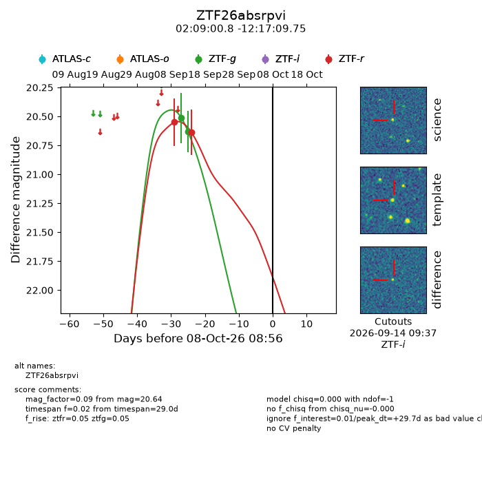
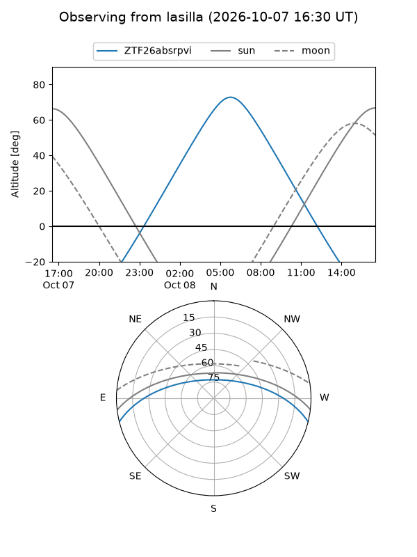
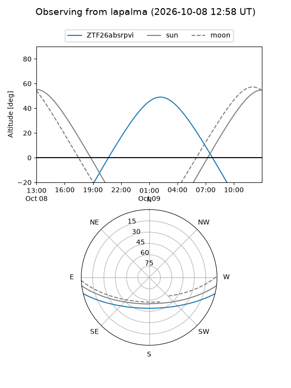
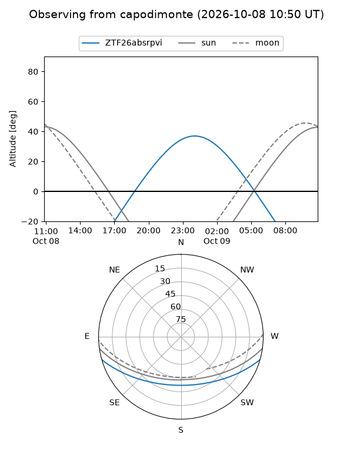
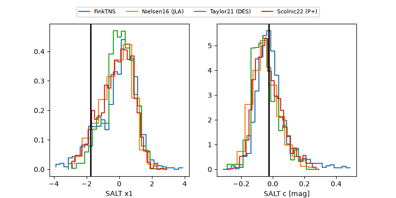

ZTF26absrpvi
Target ZTF26absrpvi at 2026-10-08 18:28
Aliases and brokers:
FINK-ZTF: ztf.fink-portal.org/ZTF26absrpvi
Lasair-ZTF: lasair-ztf.lsst.ac.uk/objects/ZTF26absrpvi
ALeRCE-ZTF: alerce.online/object/ZTF26absrpvi
Direct TNS query: direct search
alt names
ZTF26absrpvi (ztf,fink_ztf)
Coordinates:
equatorial (ra, dec) = 32.2532,-12.28604
equatorial (HMS+DMS) = 02:09:00.76,-12:17:09.75
galactic (l, b) = (177.4966,-66.53348)
Flags:
peak dt: +30.1
Photometry:
last ztfg=20.63, ztfr=20.64
2 ztfg, 2 ztfr detections
Lightcurve

Visibility



Additional plots
